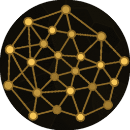
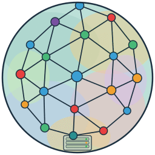
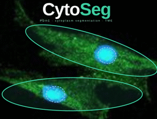

Tools & Software
Tools and pipelines developed throughout my research, from spatial network analysis to tumor simulation. Public repositories are linked below; the others are available on request.
How the tools connect
Everything on the spatial side converges on one object. Tissue acquisitions are segmented by CytoSeg and PDACSeg into a single-cell table, and that table then feeds three branches: the MOSNA suite for spatial network analysis, AnnData Tools for Scanpy and Squidpy computations, and the modeling group, where measured network statistics constrain an agent-based tumor simulation. The genomics work is a separate branch, from variant calls to annotated 5′UTR mutations.
Developed tools
MOSNA suite
3 toolsThree complementary tools around MOSNA and Tysserand, for spatial transcriptomic and proteomic network analysis — from a graphical interface to a Rust rewrite and cluster execution.

MOSNA and network building rewritten in Rust, with a new graphical interface.
Private repository
Running MOSNA on HPC clusters such as Genotoul.
Private repositoryOther tools
6 toolsSimulation, segmentation and large-scale variant analysis developed across my research projects.
Pancreatic ductal adenocarcinoma modeling with the PhysiCell agent-based framework.
Private repositoryReconstruction of synthetic networks from assortativity data.
Private repositoryNextflow pipeline using MORFEE to analyse large-scale VCF datasets.
Private repository
Segmentation method using ellipse optimisation to segment CAFs from marker signal.
Private repositoryBuilding and exploring AnnData objects, with Scanpy and Squidpy computations.
Private repositorySegmentation pipeline for spatial proteomics of PDAC tissues.
Private repositoryMOSNA GUI
MOSNA GUI makes the MOSNA package accessible to wet-lab researchers through a user-friendly graphical interface. It wraps both Tysserand and MOSNA, allowing the configuration of parameters for spatial transcriptomic and proteomic network analysis without writing code.
The workflow covers everything from raw spatial coordinates to cell network construction, niche detection, assortativity computation, and cross-patient structural comparison — all within a single interface.
Open on GitHub